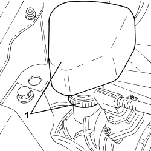

1048A28 VACUUM AIR CIRCUIT RESONATOR PIPE - R+R
- Path
- Procedures > 10 ENGINE > 1048 ENGINE AIR SUPPLY CIRCUIT > 1048A VACUUM AIR CIRCUIT > 1048A28 VACUUM AIR CIRCUIT RESONATOR PIPE - R+R
- Kind
- repair procedure (removal / refitting; the operation number is the code)
- Applies to
- all engines; all production periods
- Interactive page
- https://sloeber94.github.io/elrnDB-aBrrSpdr/en/#/946001900
Applies to: engines: 2.2 JTS; all production periods
 Removing
Removing
 Refitting
Refitting1. Loosen the band and remove the resonator from the connector on the air hose.

Applies to: engines: 2.2 JTS; all production periods
Refitting
Removing- Place the resonator back in its housing and fasten it to the connector on the air housing using the band.
Applies to: engines: 3.2 JTS; all production periods
Removing
Refitting1. Loosen the band (1a) securing the hose (1b) to the air hose between the flow meter and the throttle body.
2. Undo the bolts and remove the resonator assembly.
- If necessary, loosen the band and separate the resonator from the hose.

Applies to: engines: 3.2 JTS; all production periods
Refitting
Removing- Connect the hose to the resonator and secure it using the band.
- Fit the resonator assembly in place and secure it using the bolts.
- Tighten the band securing the hose to the air hose between the flow meter and the throttle body.
Applies to: engines: 2.4 JTD 20v; all production periods
Removing
Refitting1. Loosen the bands (1a) and remove the vacuum air circuit resonator (1b) after having released it from the bracket.

Applies to: engines: 2.4 JTD 20v; all production periods
Refitting
Removing- Refit the vacuum aira circuit resonator, secure to the bracket and tighten the bands.
Topics that link to this page (26)
- 1004B10 POWER UNIT WITH MANUAL GEARBOX - R.R
- 1004B24 POWER UNIT WITH MANUAL GEARBOX WITH HYDRAULIC SELECTION - R.R.
- 1008A46 POWER UNIT RIGID SUPPORT - TIMING SIDE - R.R.
- 1008B10 POWER UNIT FRONT SUPPORT FLEXIBLE MOUNTING (TIMING SIDE) - REPLACE
- 1016C10 SINGLE CYLINDER HEAD - R.R. AND REPLACE GASKET
- 1028H10 CONNECTING ROD AND PISTON SET - R.R
- 1032A10 CHAIN GEARS AND TIMING SYSTEM COMPONENTS R R
- 1032A12 TIMING SYSTEM DRIVE CHAIN - R.R
- 1032C33 TIMING SYSTEM FIXED HYDRAULIC TENSIONER - R R
- 1032C41 TIMING SYSTEM FIXED CHAIN TENSIONER PAD R R
- 1032D12 TIMING SYSTEM PROTECTIVE COVER(S) - R + R
- 1036C10 CAMSHAFTS IN CAMSHAFT HOUSING - R.R - INCLUDES CAMSHAFT HOUSING REPLACEMENT, IF NECESSARY
- 1036L30 FRONT OIL SEAL FOR CAMSHAFT IN CAMSHAFT HOUSING - REPLACE
- 1048A10 AIR FILTER ASSEMBLY - R.R.
- 1048A13 AIR FILTER MOUNTING - R.R.
- 1048A23 COLD AIR INTAKE FOR AIR FILTER - R.R
- 1048A40 HOSE FROM AIR FILTER TO FLOW METER - R + R
- 1048B50 INTERCOOLER - R + R
- 1072C13 EXHAUST MANIFOLD GASKET - REPLACE
- 1072C16 EXHAUST MANIFOLD WITH CATALYTIC CONVERTER - R.R.
- 1092A10 CRANKSHAFT PULLEY - R + R
- 1092G10 SINGLE ENGINE BELT - R.R
- 4130B36 SUPPLY PIPE FROM FLUID RESEVIOR TO POWER STEERING PUMP INLET PIPE - R.R.
- 4130B52 HEAT EXCHANGER PIPE - R+R
- 5040A20 AIR CONDITIONING COMPRESSOR - R+R - INCLUDES FLUID LEVEL CHECK AND TOP UP IF NECESSARY
- 5530A10 ALTERNATOR - R+R